Cinco familias nuevas, cada una salida de una de tus referencias. Todas usan el mismo estilo de acuarela y tinta del video, y se ven en los tres momentos clave: pasiva, agresiva y asertiva. A la izquierda, cómo quedaría un cuadro del reel.
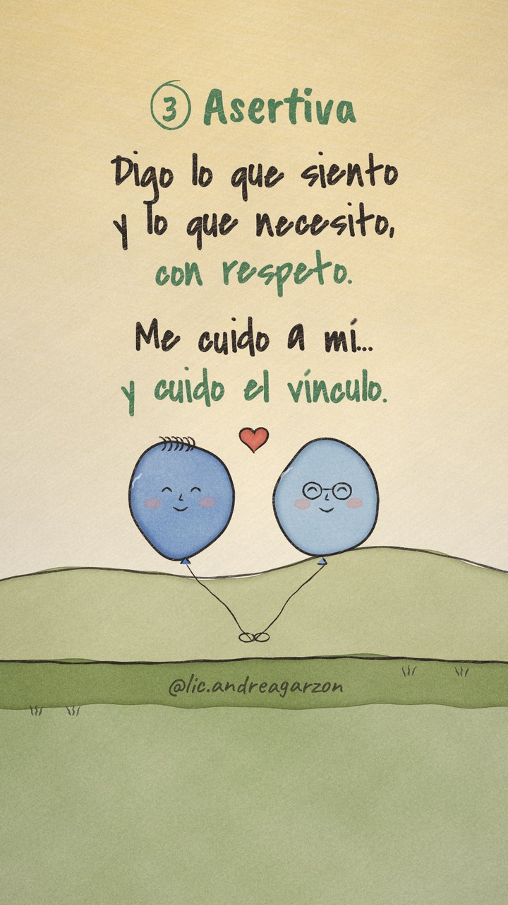
Inspirada en @msofiadelourdes, los globos azules con caras.
Cada persona es un globo. Cuando se calla, se desinfla y queda abajo. Cuando ataca, se infla y se pone rojo hasta casi explotar, y el otro se aleja flotando. En la asertiva quedan a la misma altura, con los hilos atados juntos.
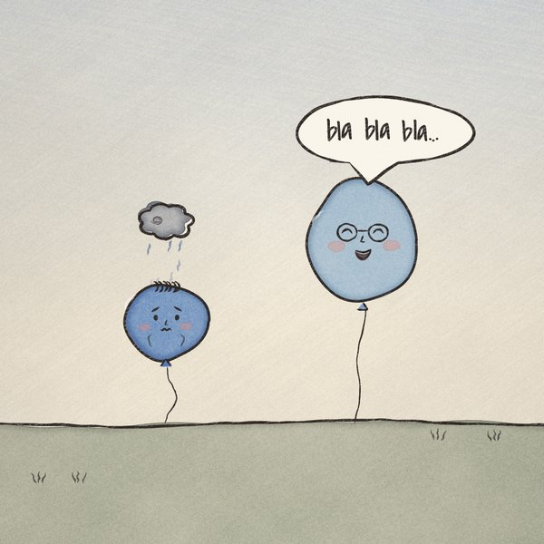
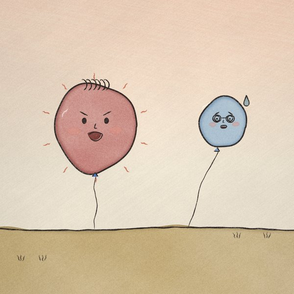
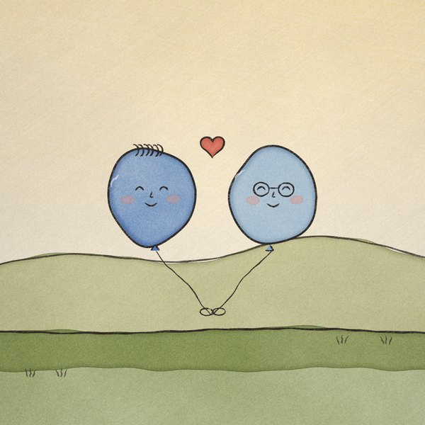
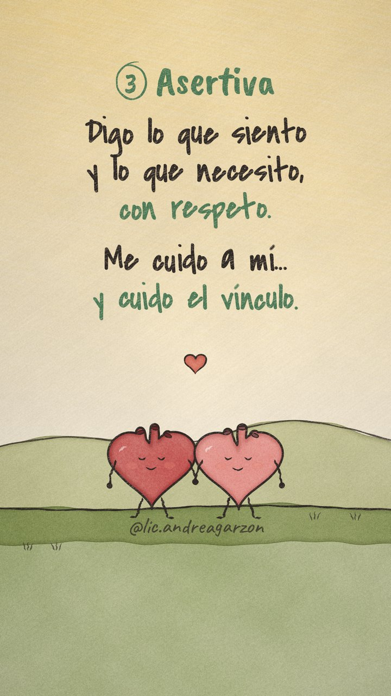
Inspirada en @miriamsa.tanatologa, los corazones en la playa.
Dos corazoncitos con piernas y bracitos. En la pasiva, uno se achica debajo de su nube. En la agresiva echa vapor por las venitas, como una pava, y al otro le aparece una grieta. En la asertiva se sientan juntos de la mano.
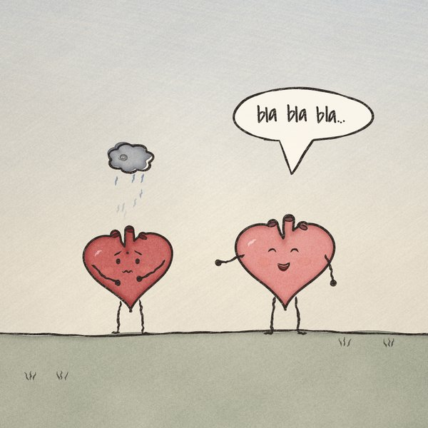
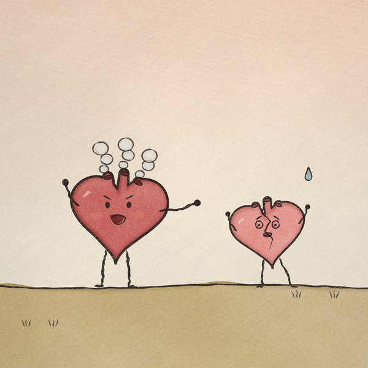
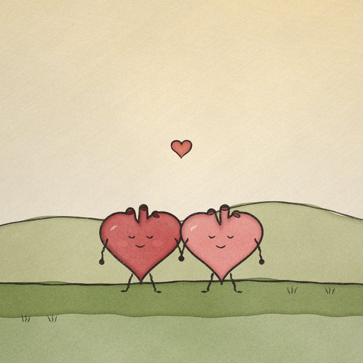
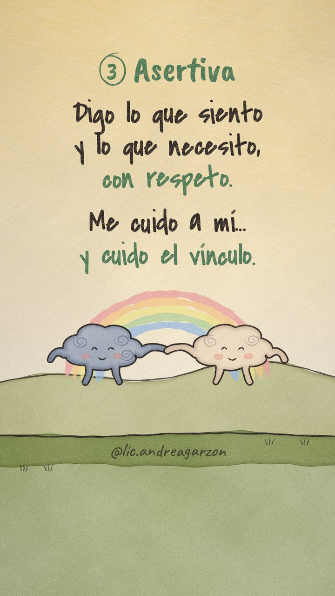
Inspirada en @neuro_class, la nube que da la mano.
Las emociones hechas personaje. La nube gris llueve cuando se calla y se vuelve tormenta, con rayo, cuando ataca. La nube clara se achica del susto. En la asertiva se dan la mano y sale el arcoíris.
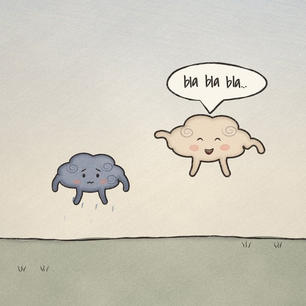
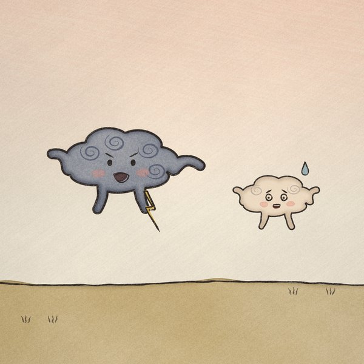
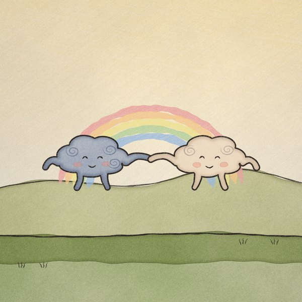
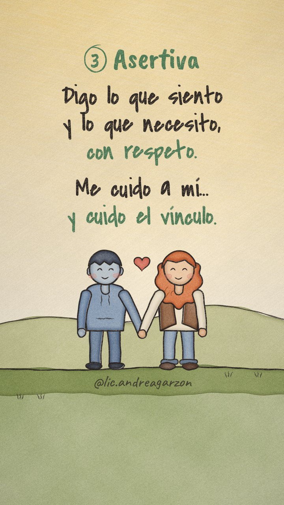
Inspirada en @neuro_class, el chico de buzo y la chica pelirroja.
Dos personas simples: él en azul, como el chico de brazos cruzados, y ella pelirroja con chaleco. Es la opción más directa, porque cualquiera se ve reflejado. Brazos cruzados en la pasiva, puño y dedo acusador en la agresiva, y de la mano en la asertiva.
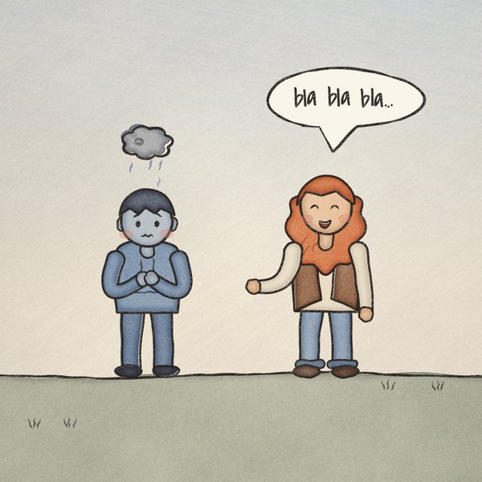
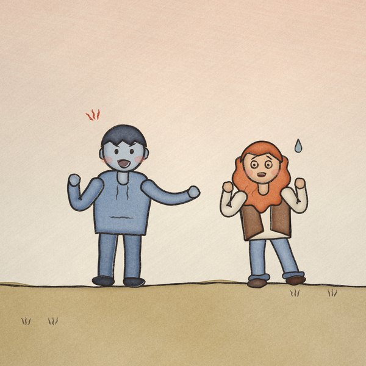
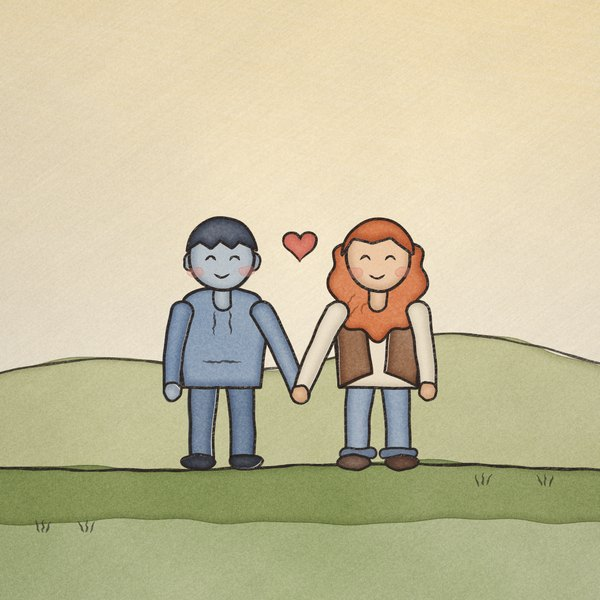
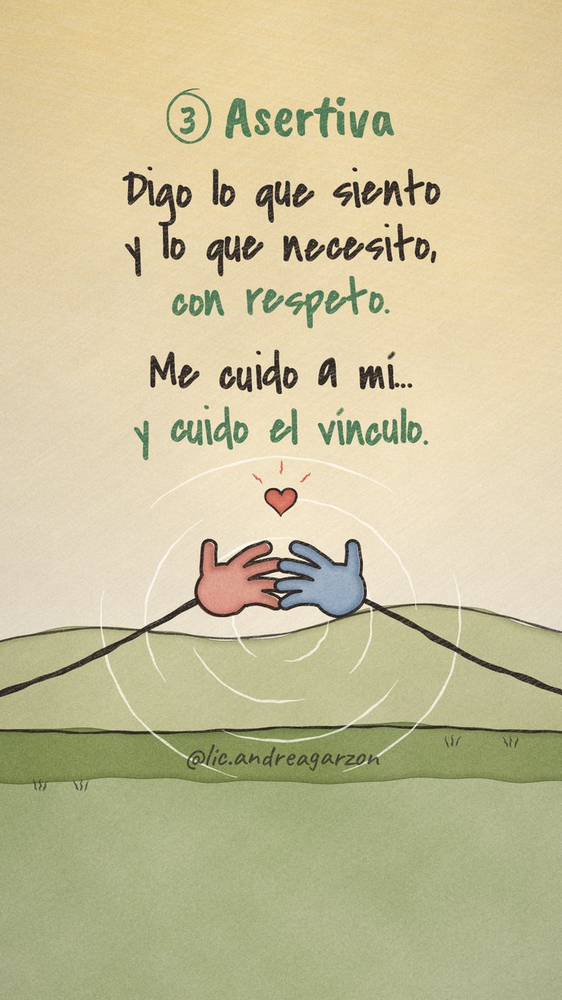
Inspirada en @miriamsa.tanatologa, «Siento que te perdí dos veces».
Sin caras: todo lo cuentan los gestos. Un puño que se guarda mientras la otra mano habla y habla. Un dedo que señala y una mano que retrocede. Dos manos que por fin se encuentran. Tiene los círculos concéntricos de fondo de tu referencia.
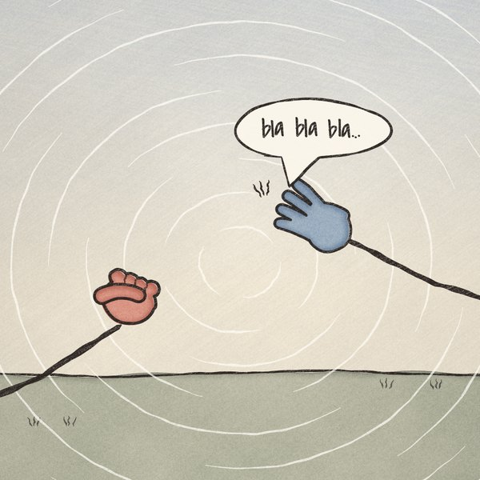
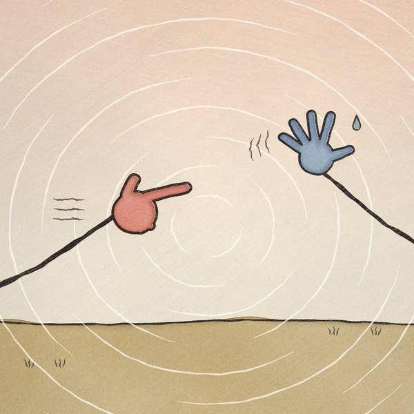
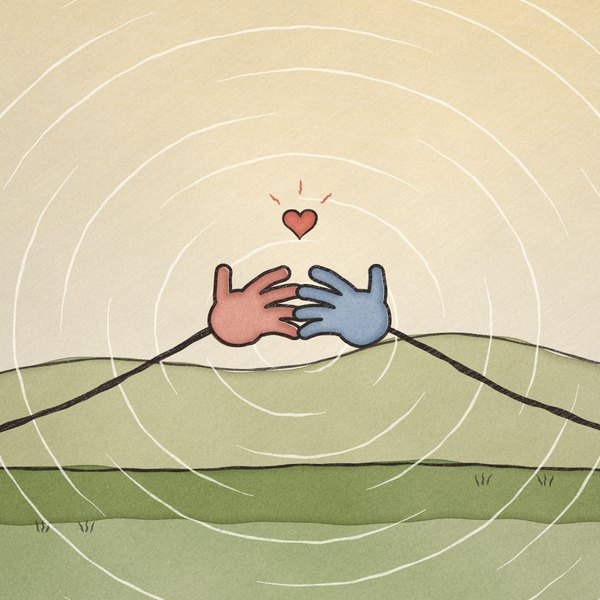
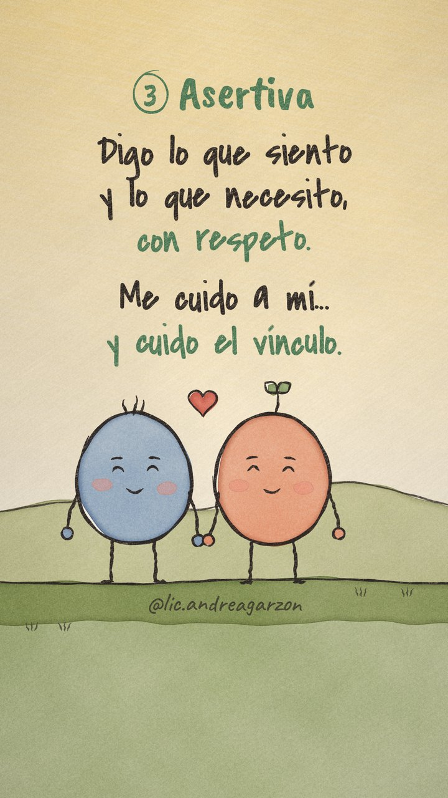
Los dos personajes redondos que ya tiene el video, uno azul con pelito y otro coral con un brote, con la nubecita gris como "lo que molesta".
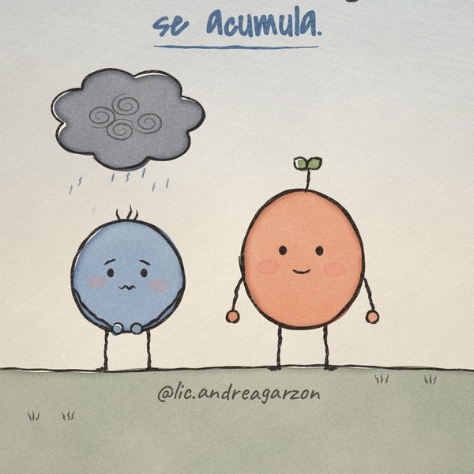
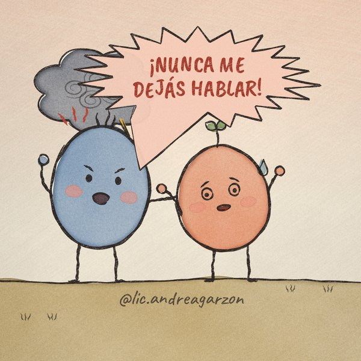
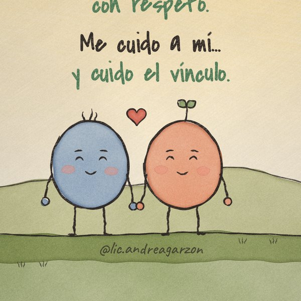
Decime el número, o una mezcla (por ejemplo, los corazones con el fondo de círculos de las manos). Rehago el video completo con esos personajes, con el mismo guion, textos, tiempos y tu usuario.